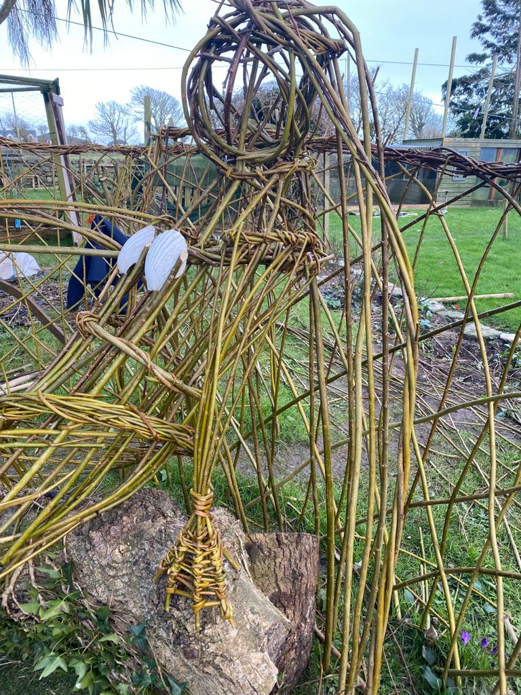
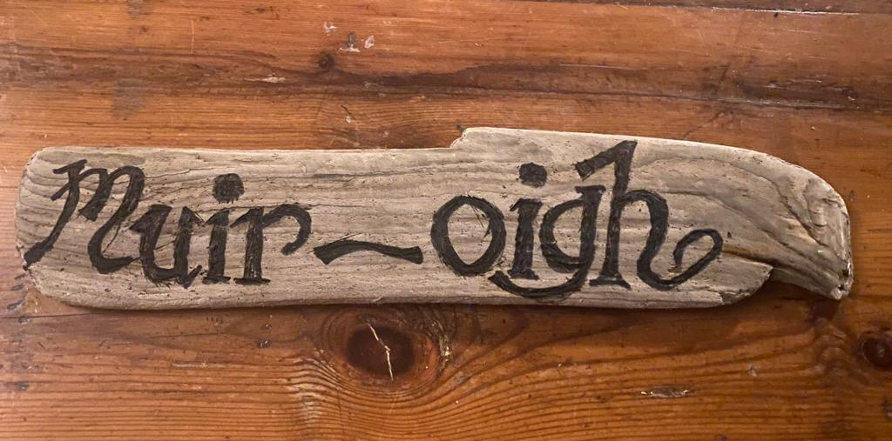
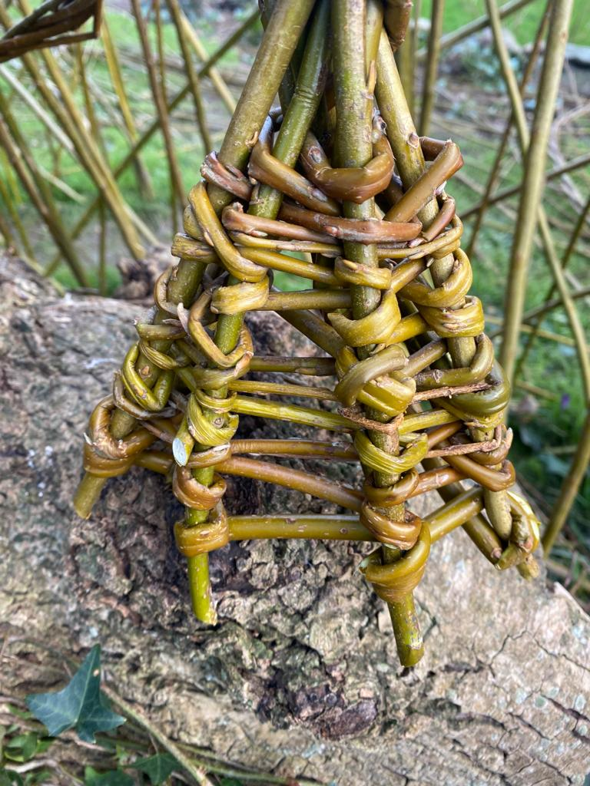
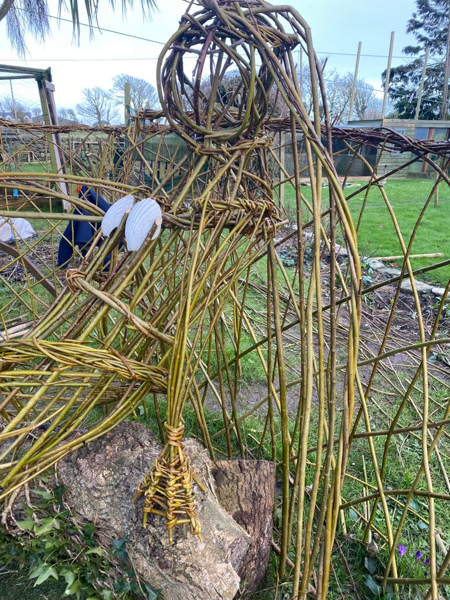
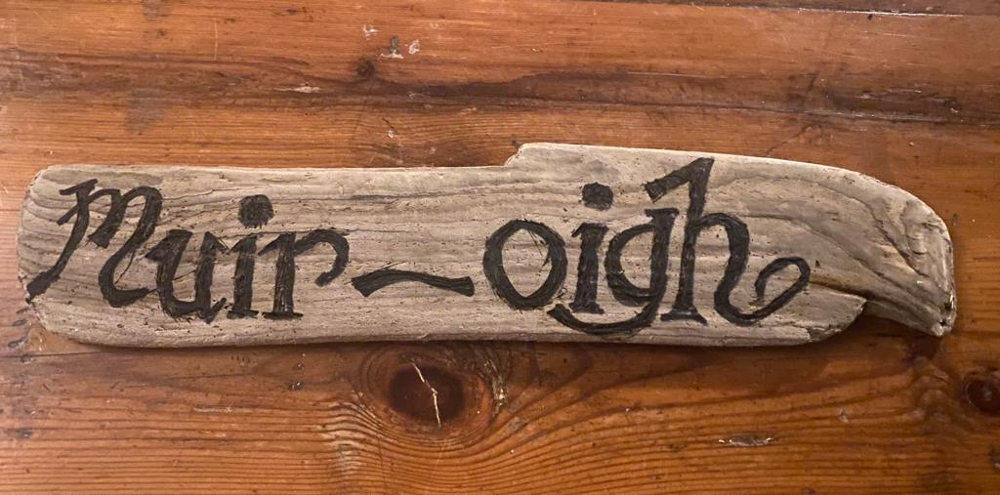
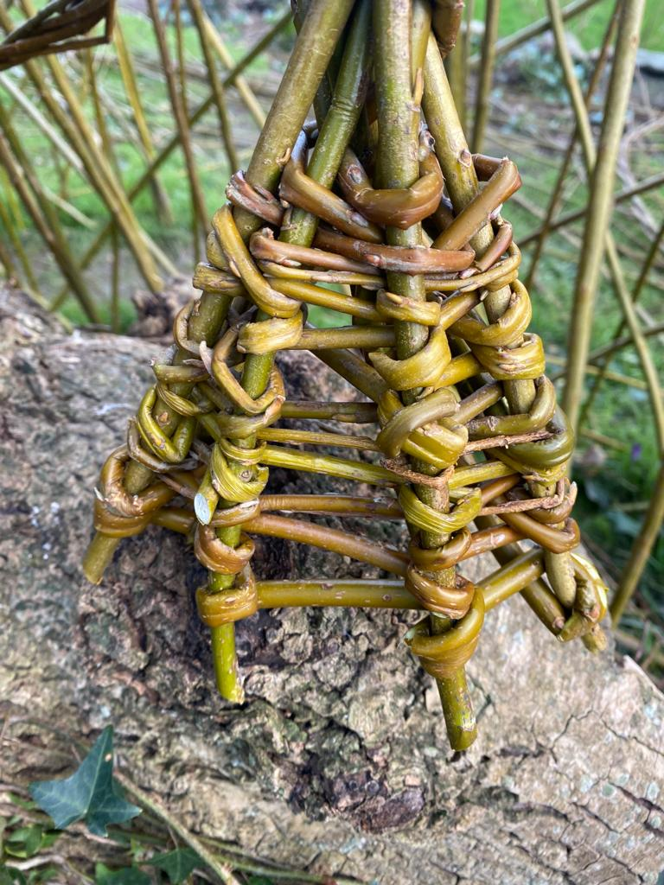

The Muir-Óigh of Kilmore Quay
The Muir-Óigh, embodying the mystique of the ocean, are celebrated in Irish folklore as sea maidens with the power to traverse the marine and terrestrial realms. Depicted with human beauty above their sea-tail, these beings symbolize the depth and mystery of the sea.
This willow sculpture by Anne Lawlor captures the essence of the Muir-Óigh, drawing upon the rich tapestry of Irish lore. The Muir-Óigh are known not only for their enchanting beauty but also for their magical red hats adorned with feathers, which allow them to transform back into their mermaid form. Without this hat, they are bound to the land, losing their ability to return to the sea.
The lore also speaks of their webbed hands and feet, subtle markers of their true nature. These physical traits remind us of their connection to both land and sea, living between two worlds yet belonging fully to neither.
This sculpture stands as a tribute to the Muir-Óigh, inviting reflection on the mysteries that lie beneath the waves and the tales passed down through generations in Kilmore Quay, Co. Wexford.
Gallery

 





Connect With Us
Created by Anne Lawlor. Follow her journey and discover more enchanting works through her social media channels.